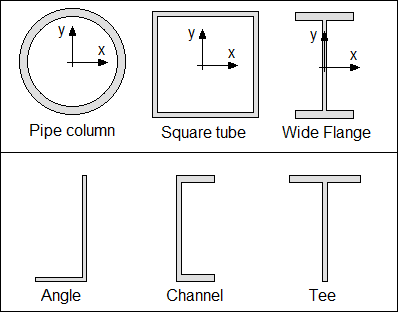

This blog entry is a primer on steel columns, intended for those who
have no background
in Civil Engineering. We'll discuss the primary
purpose of columns, other incidental
behavior of columns, and how
different steel shapes affect the behavior of columns.
For image credit, see this link.
Steel columns are primarily designed to hold compressive loads. These loads can fall into two broad categories: live loads and dead loads. Live loads refer to anything in the building that is moveable, such as office equipment and people. Dead loads refer to the building's own self-weight. This includes the steel structure itself, staircases, and any concrete floors.
There are occasions, however, when a column might have to hold tensile forces. Tensile forces might arise from wind sweeping under open buildings, which would cause the roof to tend to lift up! Any open building must be designed for tensile forces. Typically, totally enclosed buildings need not be designed for tensile forces. In the image shown on the right, the left half shows a column subject to a compression force. (The live and dead loads are consolidated into a single force called "P".) The right half shows an open building whose columns are in tension.
In several parts of the country, columns must also be designed for earthquake forces. Earthquakes can cause tension and compression, too, if the ground motion undulates in a vertical direction.
Structural steel shapes seem to be so rigid, that it's hard to image that they actually bend. But bend they do! Columns, like other steel members, are also subject to bending, a term which civil engineers refer to as "flexure". The image on the right shows three different ways -- or modes -- in which columns can bend. Needless to say, these drawings exaggerate the amount of bending so that the reader will get the idea.
The left-most mode is called "flagpole bending". One might perch, say, a fast food sign on a single tall column in order to make the sign visible for motorists and pedestrians. Also, any light pole that you see is typically a flagpole-type structure.
I'm calling the center mode "simple bending" (though its actual name currently escapes me). This type of flexure will occur in a building if the column is pinned at the top and the bottom. If a steel column is bolted at the top and bottom, there might be sufficient movement within the bolt holes that the designer is justfied in calling it "pinned".
The right-most bending mode shown is called "double curvature". In order for double curvature to occur, the column must be fixed at both the top and the bottom. A column may go into double curvature bending if the building is subject to lateral forces, such as wind or earthquakes.
One might be inclined to think that columns are equally strong regardless of the bending mode. That is definitely not the case, however. Say that you have three columns of the same height, each of which uses the same piece of steel, and each of which is subject to the same load. Flagpole bending is the least strong; simple bending is next; and double curvature is the most strong.
Steel column material comes in many different shapes and sizes. But in this section, we are only going to discuss shapes. It goes without saying that larger sizes are stronger than smaller sizes, so that's why we'll confine ourS discussion to shapes. We'll begin discussing the pipe shape.
Pipe shapes used as columns have a huge number of advantages. One is that their section properties are the same in all directions, regardless of which way the axes are rotated. In addition, pipe shapes handle twisting -- a behavior which civil engineers commonly call torsion -- magnificently. A third advantage of pipes is that the interior surfaces are not exposed to the elements. All those are reasons why pipes are the most frequently used member in the offshore oil industry. The disadvantage of pipes is that it is labor intensive to install them or connect other steel components to them because welding is required.
Square tubes have one advantage that pipes also have: unexposed interior surfaces. Square tubes resist torsion very well, although suface warping can occur when a square tube is twisted. Like pipes, square tubes are typically welded during installation, and during the attachment of steel components.
Pictured also is a wide flanged beam which non-civil engineers typically call I-beams! Wide flanged beams are the number one choice for columns within buidings because connections can be bolted, thus saving labor. One can see that all the surfaces of a wide flanged beam are exposed to the elements. But that typically matters not, because buildings are weatherproofed, thus limiting exposure. One disadvantage of wide flanged beams is that they are typically stronger in bending in the x-axis. Thus, a designer might be inclined to provide bracing to reduce bending in the y-axis.
The lower half of the image shows three other shapes that are commonly used in steel structures: angles, channels and tees. While these shapes fill important roles in steel construction, they are normally not used for steel columns. Compression members which are very short are often referred to as struts. Angles, channels and tees are all suitable for struts, but insuitable as major column members.
So, what have we talked about?
So, how do you feel? Did you learn anything?
Back to overview